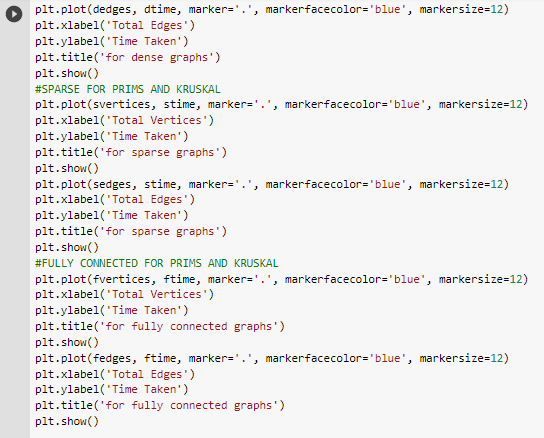
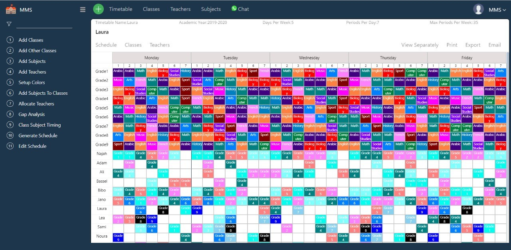

FINAL YEAR PROJECT
A state-of-the-art audio synthesis pipeline that aims to bring a more fulfilling experience to the differently abled and the underprivileged, and make audio production more accessible for amateur creatives. It utilizes cutting edge generative models, coupled with a comprehensive NLP engine that extracts all the information needed to produce a complete audio synthesis.
SEMESTER PROJECT
Implementation of Prim's and Kruskal's Algorithm using python and Google Colab as platform to analyze the behavior of the two algorithm using greedy approach
SEMESTER PROJECT
A software application that used Django web framework to generate a clash-free timetable for GIK Institute
SEMESTER PROJECT
Developed a website using HTML and CSS for the front-end whereas phpMyAdmin and xampp as the back-end to make online railway reservations to avoid oneself from long queues